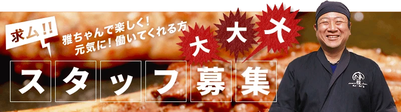
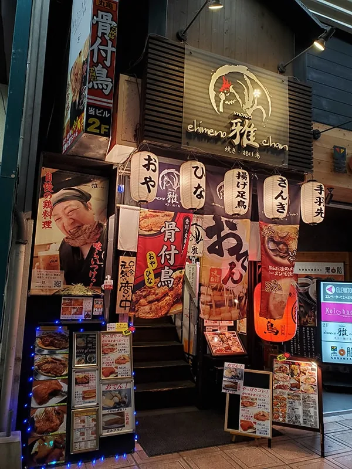

愛媛の雅ちゃん
スタッフ募集
雅ちゃんで楽しく、元気に働いてくれる方を募集しています

アルバイト募集 居酒屋のホール・キッチンスタッフ
スタッフ卒業シーズンに伴い、
NEWスタッフを大募集しています。



募集概要
| 雇用形態 | アルバイト |
|---|---|
| 職種 | ホール・キッチンスタッフ |
| 給与 | 時給1,100円〜1,250円 試用期間（2か月）は時給1,040円以上 金曜日は時給50円UP 習熟度に応じて、レベルアップごとに随時昇給あり |
| 勤務時間 | 18:00〜23:00 週2日〜OK シフト制（2週間ごとに作成） 時間・曜日応相談／午後のみ・短時間勤務OK／平日のみOK／扶養内勤務OK／終電など早上がり相談OK |
| 休暇・休日 | シフトにより決定 日曜日・祝日休み 夏季休暇（1週間） 年末年始休暇（12/31〜1/5） 帰省や旅行、テスト期間中などのお休み希望も柔軟に対応 |
| 勤務地 | 愛媛の雅ちゃん 〒790-0012 愛媛県松山市湊町5丁目4-2 健勝ビル2F 伊予鉄「松山市駅」より徒歩30秒 転勤なし／U・Iターン歓迎 |
| 企業名 | 株式会社雅道 代表：土肥雅樹 |
仕事内容
キッチン業務
- 居酒屋料理の仕込み
- 盛り付け、トッピングなどの調理補助
- 洗い場 等
料理は基本店主が作るので、サポートをお任せします。
ホール業務
- ドリンク作り
- ドリンク、料理の配膳
- 片付け
- 接客
- キッチン業務は調理補助メイン
- レジ操作＆電話対応なし
難しい作業はありません。未経験の方も丁寧にお教えするのでご安心ください。


求める人材
- 未経験者歓迎
- 学歴・資格・経験不問
- 元気に明るい対応ができる方大歓迎
- 専門学校・短大・大学生歓迎
- フリーター歓迎
- 副業・WワークOK
- 無資格歓迎
- 長期歓迎
- ハローワークで求職中の方も歓迎
経験者歓迎（ブランクOK）
カフェスタッフ、喫茶店、レストラン、焼肉店、居酒屋など飲食店の店舗スタッフ、ホールスタッフ、調理スタッフ、社員食堂、学校給食などの調理補助、洗い場、アパレル販売、本屋、コンビニ、スーパー、ドラッグストア、カラオケ店、パチンコ店での接客など、様々な経験が活かせます。
アピールポイント
- 2週間ごとのシフト制
- 時間・曜日は応相談。午後のみ・短時間・平日のみ・扶養内勤務もOK。終電など早上がりも相談できます。
- アクセス抜群
- 松山市駅より徒歩30秒。伊予鉄「松山市駅」すぐ。通いやすく、授業や本業のあとにも立ち寄りやすい立地です。
- 学業との両立を応援
- 週2日〜OK。授業が忙しい時期や終電時間なども考慮し、柔軟に対応します。自分のペースで無理なく働けます。
- オシャレ自由度高め
- 髪色・ピアス・ネイルOK（長いネイルは手袋着用のためNG）。自分らしさを大切にしながら働けます。
- 絶品まかないで食費を節約
- 賄いはメニューから好きなものが選べます。お腹を満たしつつ食費の節約にも。
待遇・福利厚生
- 絶品まかない付き
- 制服貸与（Tシャツ、帽子、前掛け）
- 髪色自由
- ピアスOK
- ネイルOK（手袋着用のため、長いネイルはNG）
- ネックレスOK（華美すぎないもの）
- 自転車、バイク通勤OK
- 社会保険（法令に則り適用）／雇用保険・労災保険・健康保険・厚生年金
店舗について
席数：37席（テーブル7卓、座敷2つ、カウンター7席）
顧客層：40〜60代の仕事帰りのビジネスマン、ファミリー層がメインです。
応募方法
応募後、1営業日以内にご連絡します。
友達と応募もOKです。
選考の流れ
- 応募
- 面接1回
- 採用
- 面接時の履歴書は写真貼り付けなしでOK
- 勤務開始時期調整OK
- 職場見学可
WEB応募は24時間受付中です。